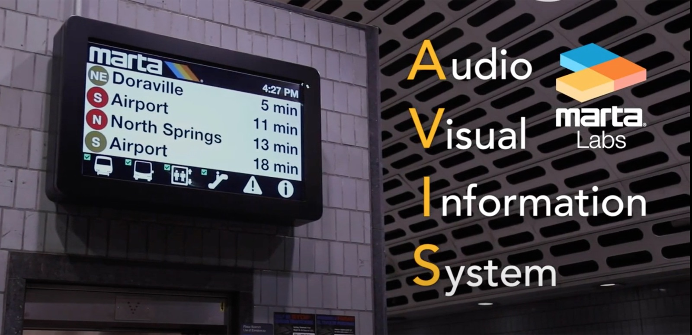
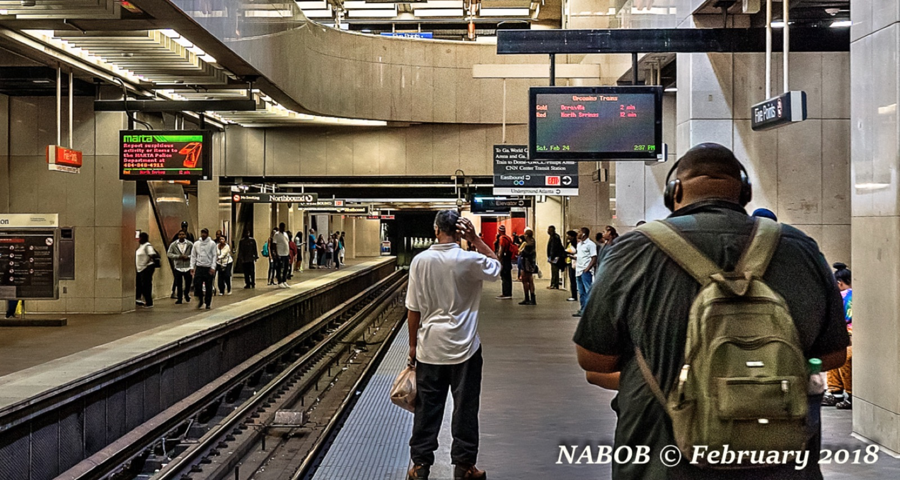
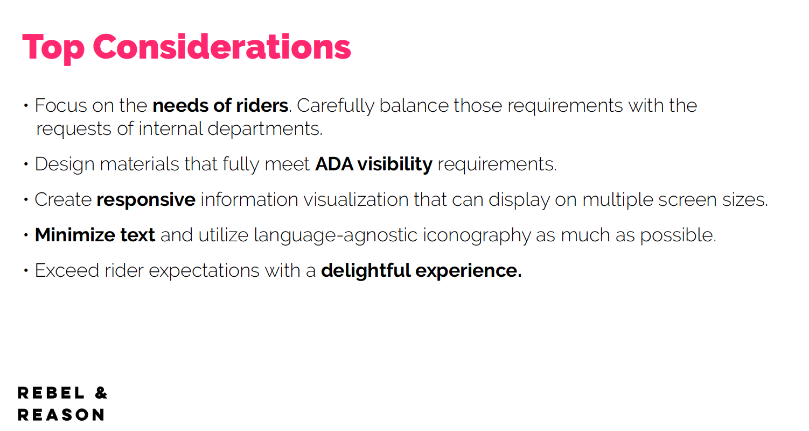
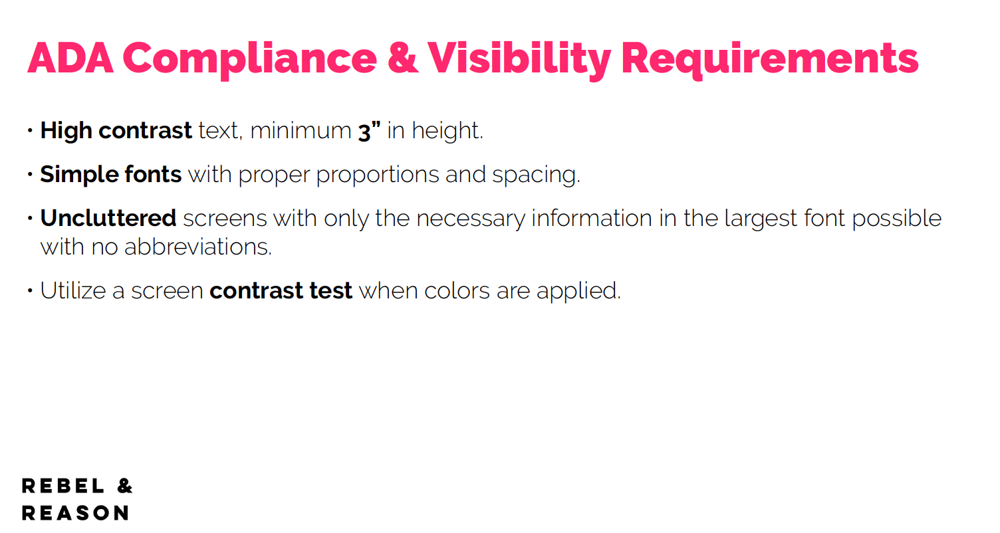
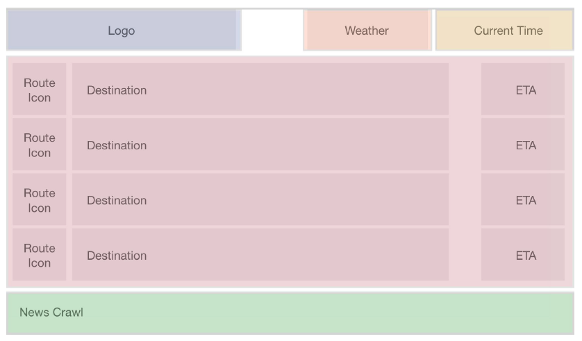
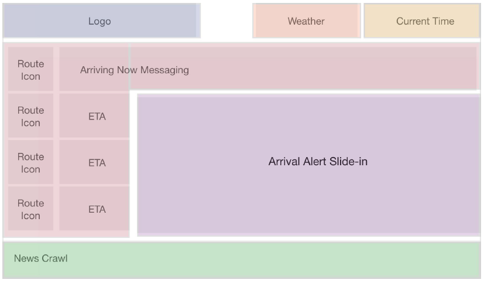
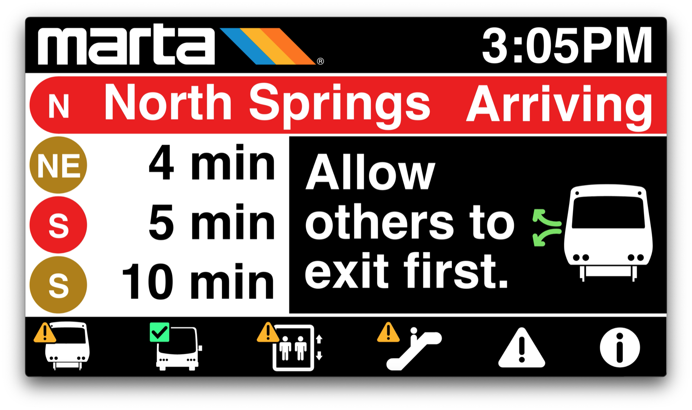
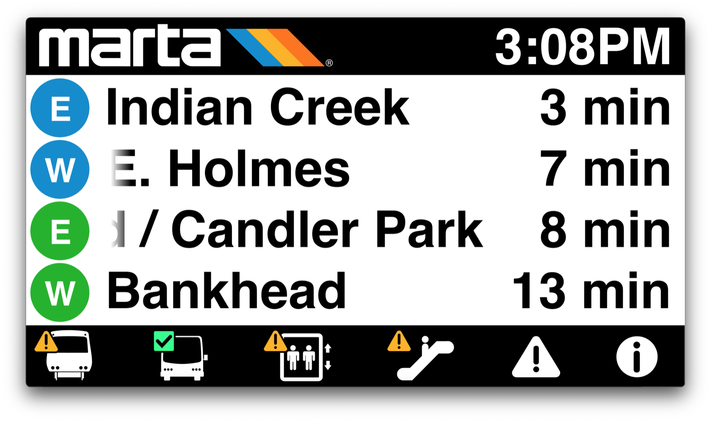

03 / Case Study — Accessibility & Environmental
MARTA Signage
A ground-up redesign of Atlanta transit’s digital signage — now live on 326 screens across all 38 MARTA stations, built to be read by everyone.
01 — Overview
MARTA — metro Atlanta’s rapid transit system — needed a complete overhaul of the video-monitor ecosystem across its network. The old screens were outdated and inefficient, and the hardware was being replaced system-wide.
I led the design of the new dynamic signage system: a visualization framework deployed on 326 screens across all 38 stations, built to be accessible, efficient, and scalable for whatever MARTA wants to show next.

02 — The Challenge
Communicate to everyone, at a glance, in public
Transit signage is UX at its most public and least forgiving. Riders read it in a half-second, mid-stride, in a loud station — and “riders” includes people who are blind or have low vision. This couldn’t be a compliance checkbox.
The brief: modernize the entire ecosystem, hold it to MARTA’s brand, make it flexible enough to grow, and design it to be readable for everyone who moves through the system.

03 — Approach
Design with the people it has to work for
I grounded the system in real research and real accessibility expertise, then built it to scale.
- 1Talked to everyone who touches it. Collaborated with stakeholders across departments — riders, operators, and marketing — and grounded the work in their feedback.
- 2Set accessibility standards, together. Partnered with the Center for the Visually Impaired to define sizing, contrast, timing, spacing, and scroll speed.
- 3Structured before styling. Mapped the data and visual hierarchy, built personas and use cases, and wireframed before any visual design.
- 4Built a system, not a screen. A modular, object-oriented framework designed to scale and adapt over time.




04 — The Solution
An app-like system for the platform
The design borrows the interaction model people already know from their phones: a bottom dock with large, clear icons and notification badges, tabbed wayfinding, and automatic rotation through alert categories. Status information gets priority, with flexible room for alerts and news.
The framework is future-ready and interactive, and everything holds to accessibility and brand standards — so it stays readable and on-brand as MARTA adds to it.
I also designed the system in motion — the alert slide-ins, category rotation, and scroll timing — and built an interactive prototype so stakeholders could see exactly how it would feel on a live board.



05 — Impact
Live, system-wide, and being eyed by other cities
The system was deployed system-wide in 2021 and is currently in use at every MARTA station. It worked well enough that white-labeling it for other transit systems has been on the table.
326
Screens deployed across the network
500k+
Daily riders served
38
Stations live, system-wide
06 — Reflection
Designing for a rider who can’t see the screen the way I do reset my definition of “clear.” When you build for the edges first — the loudest station, the shortest glance, the lowest vision — the design gets better for absolutely everyone. It’s why accessibility is my starting point, not a final pass.